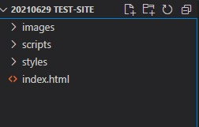
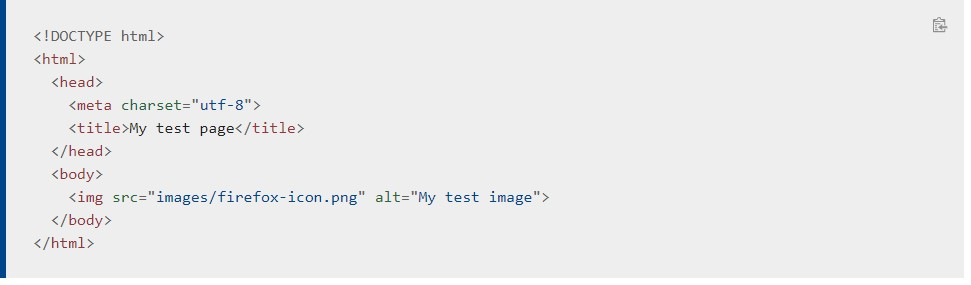
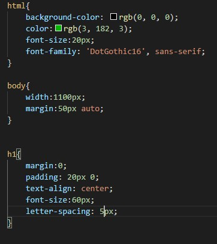
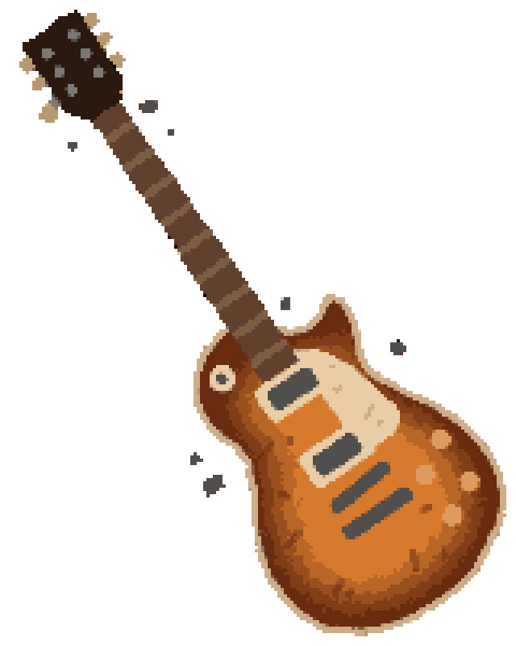
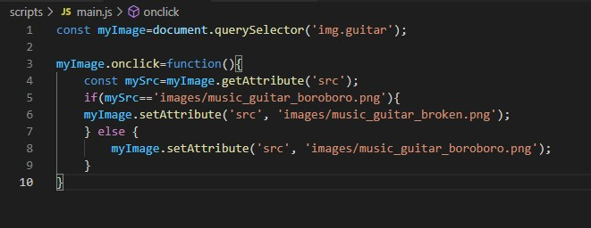

今好きな曲です
今回は、 このページを参考にして簡単なウェブページを作成した。
今の自分に作れるのは画像やハイパーリンクで飾り立てた文章だ。よって
を考え、紙にでも書き出しておく。
ウェブページを構成するファイル/フォルダを決まり通りに作成する。今回は以下の通り。
書き方には型がある(らしい)ので、その通りにまずは文章を書く。
＜head＞＜/head＞の間に見せたくないが必要なものを書く。＜body＞＜/body＞の間に見せたいものを全て書く。この画像の場合画像を差し込んでいる。
ページをどんな見た目にしたいかをCSSファイルに書き記す。
pの｛色は：赤色だ；｝という意味になる。この調子でページの姿形を決定していく。
ページの内容、姿形を決めてから、どこをどんなふうに動かすか考える。特に思いつかないので、今回は参考にしたページに従ってクリックすると入れ替わる画像を下に追加した(蛇足?)。
 現時点では、"GitHub=ウェブサイトをお手軽に公開できるサイト"位の認識だ。アカウントを登録して、リポジトリを作成して、作ったファイルをコピーアンドペーストして、設定からウェブサイトを公開する。